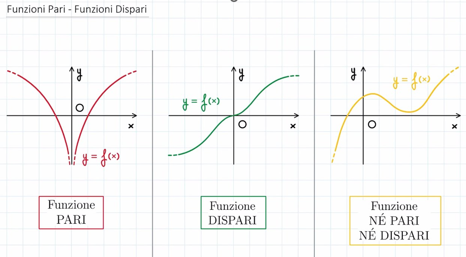
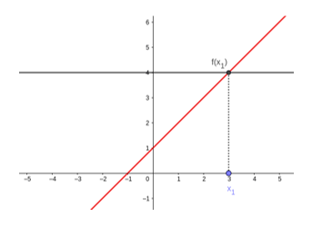
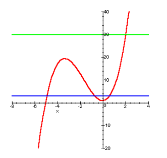
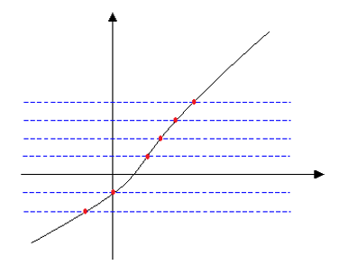
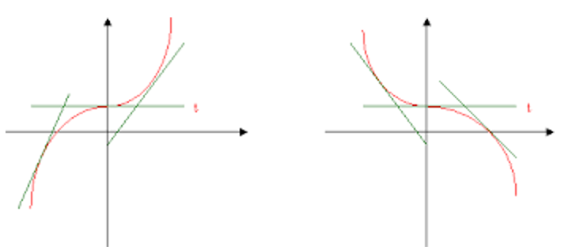

Contenuto della Lezione 1
Lezione:
Una funzione è una relazione tra due insiemi di elementi, solitamente chiamati dominio e codominio, in cui ogni elemento nel dominio è associato ad esattamente un elemento nel codominio.
F: A → B
x ↦ y
x è la variabile indipendente chiamata anche controimmagine di y, mentre y è la variabile dipendente chiamata anche immagine di x.
L’equazione della funzione è y=f(x)
Le funzioni si dividono in due macrogruppi: algebriche, in cui il valore di y si ottiene a partire dal valore di x mediante un numero finito di operazioni algebriche; trascendenti, in cui il valore di y non si può ottenere mediante le sole operazioni algebriche.
COSA SONO IL DOMINIO E IL CODOMINIO DI UNA FUNZIONE?
Il dominio o campo di esistenza è il sottoinsieme di R costituito da tutti i valori di x per i quali la f(x) della funzione ha significato. Il codominio è l’insieme delle immagini di x possibili.
PROPRIETA’ DELLE FUNZIONI
Funzione pari: Data una y=f(x) f è pari se f(-x)=f(x) per ogni x che appartiene al dominio.
Funzione dispari: Data una y=f(x) è dispari se f(-x)=-f(x) per ogni x che appartiene al dominio

Funzione limitata: Una funzione si dice limitata se il suo codominio è un intervallo limitato.
INIETTIVITA’, SURIETTIVITA’ O BIUNIVICITA’?
-Una funzione è iniettiva se ad ogni elemento del dominio corrisponde un solo elemento nel codominio. Elementi distinti immagini distinte, immagini uguali elementi uguali.
-Una funzione è suriettiva se ogni elemento del codominio è il risultato di almeno un elemento nel dominio. Ogni elemento di B è immagine di almeno un elemento di A.
-Una funzione è biunivoca se è sia suriettiva che iniettiva. Ogni elemento del codominio è immagine di uno e un solo elemento di A.
NOTA BENE: se f è biunivoca esiste anche la funzione inversa f^−1 (x)
CRESCENZA E DECRESCENZA
Una funzione si dice crescente in un intervallo I se in tutti i punti di tale intervallo si verifica: x1<x2, allora f(x1)≤f(x2)
Una funzione si dice decrescente in un intervallo se in tutti i punti di tale intervallo si verifica: x1<x2, allora f(x1)≥f(x2)
